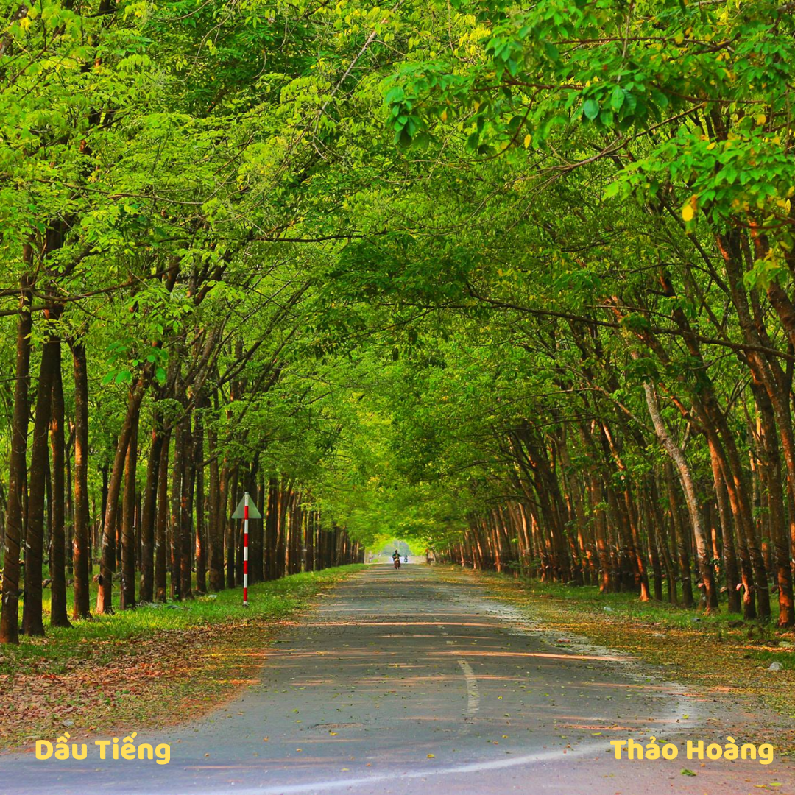
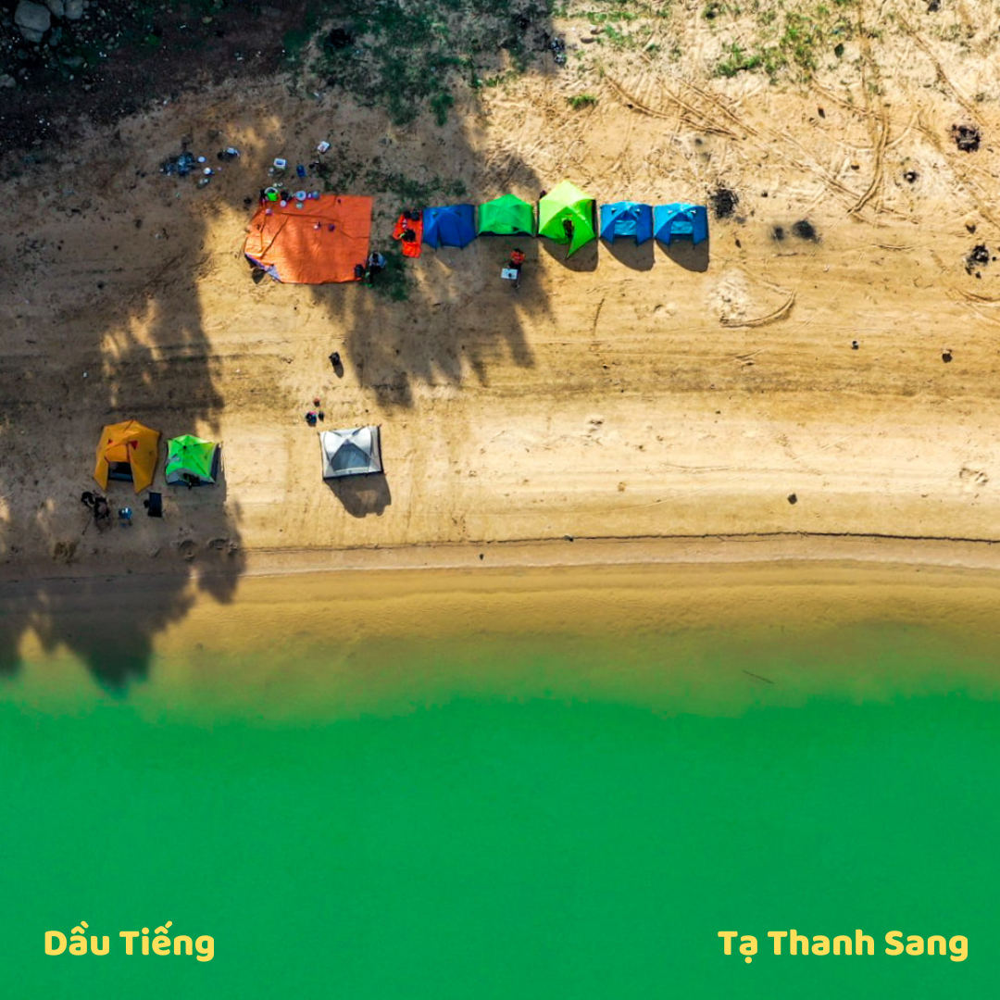
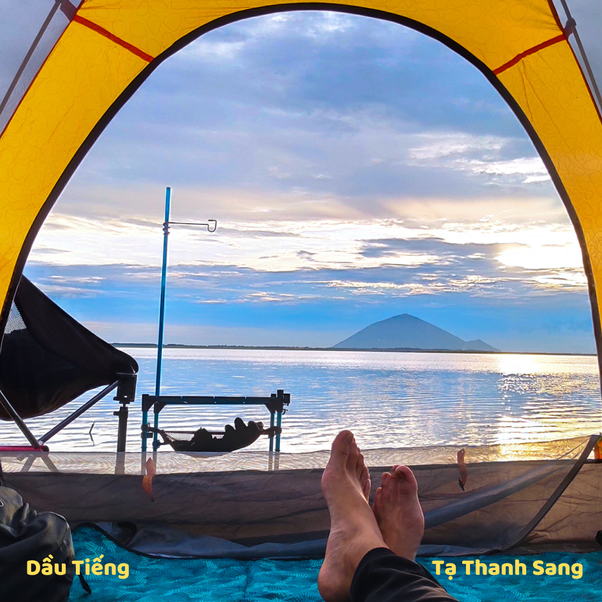
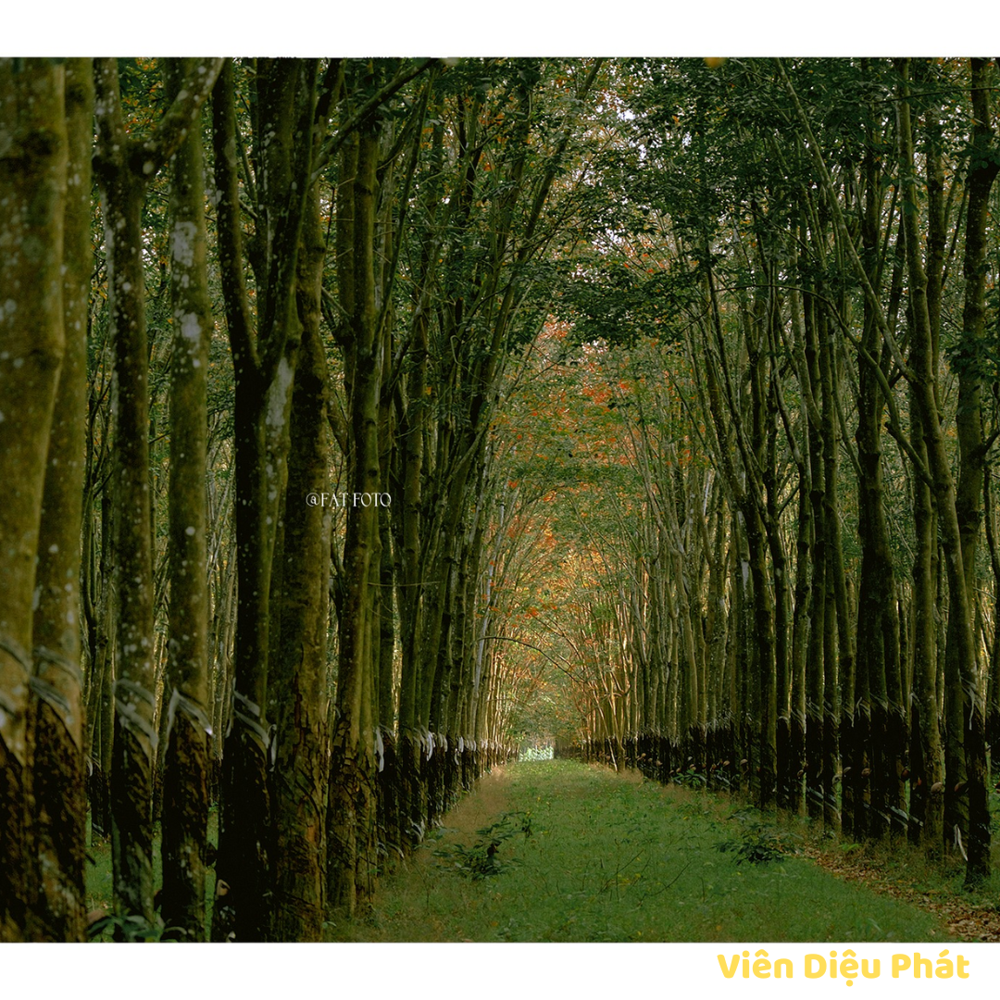
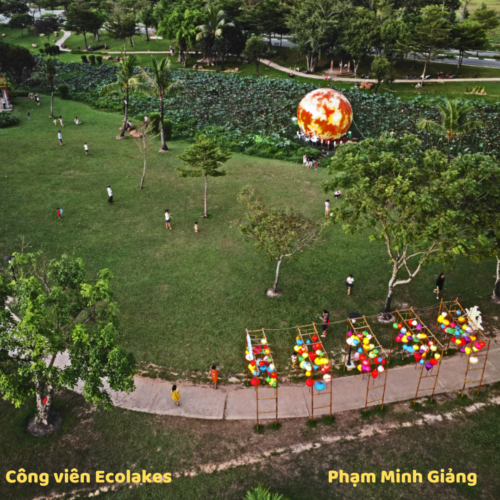
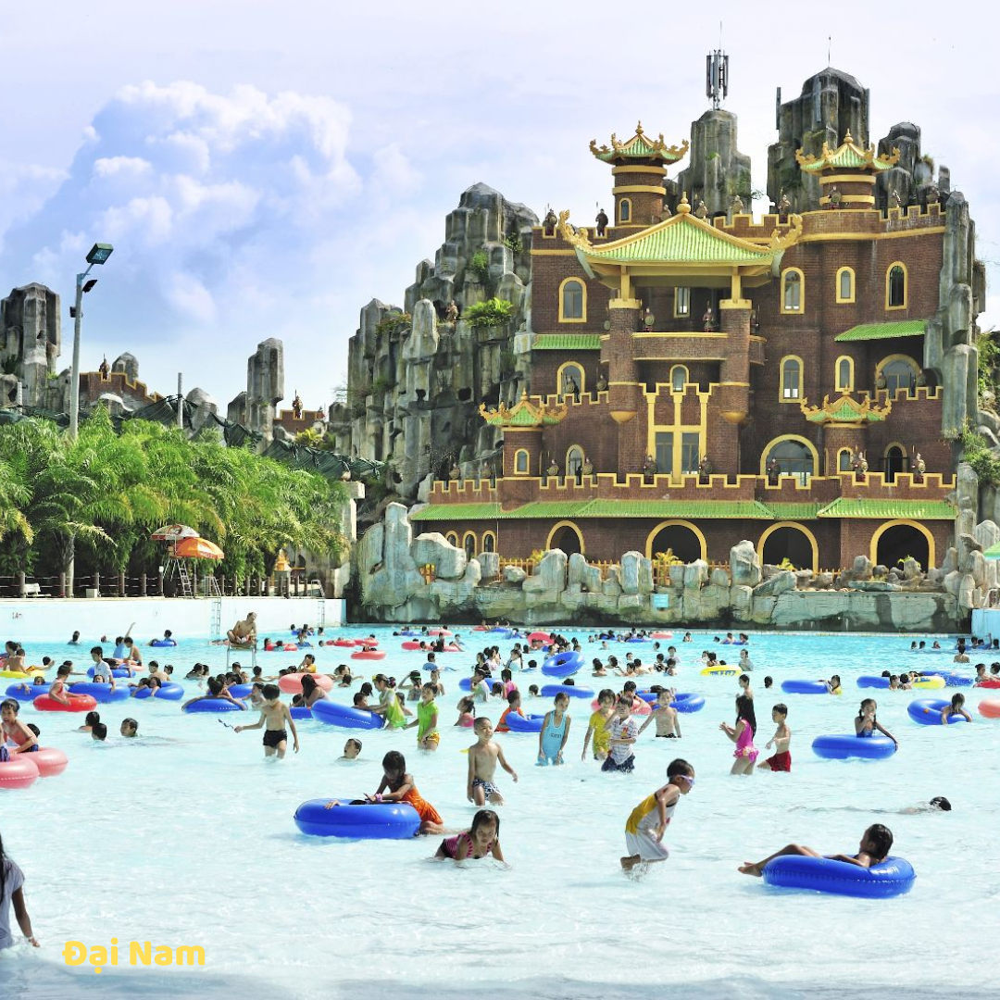
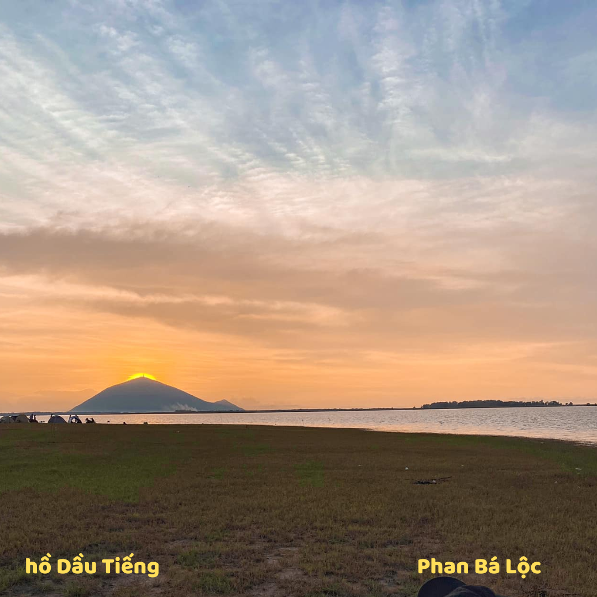

LỊCH SỬ
VĂN HÓA
DU LỊCH
Thuở ban đầu
Khi mới mở đất phương Nam, Bình Dương là tên một tổng thuộc huyện Tân Bình, phủ Gia Định.
1808
Khi huyện Tân Bình được đổi thành phủ thì Bình Dương được nâng lên một trong bốn huyện của phủ này.
1965
Tỉnh Bình Dương được thiết lập nhưng không phải trùng với địa bàn của huyện Bình Dương xưa kia
01/01/1997
Sau bao lần tách nhập địa phận và thay đổi tên, tỉnh Bình Dương được tái lập
Võ dưỡng sinh
Lễ Kỳ yên Đình Phú Long
lò lu
hiện vật di tích dốc chùa
Lễ hội “Mùa trái chín”
  
 
 